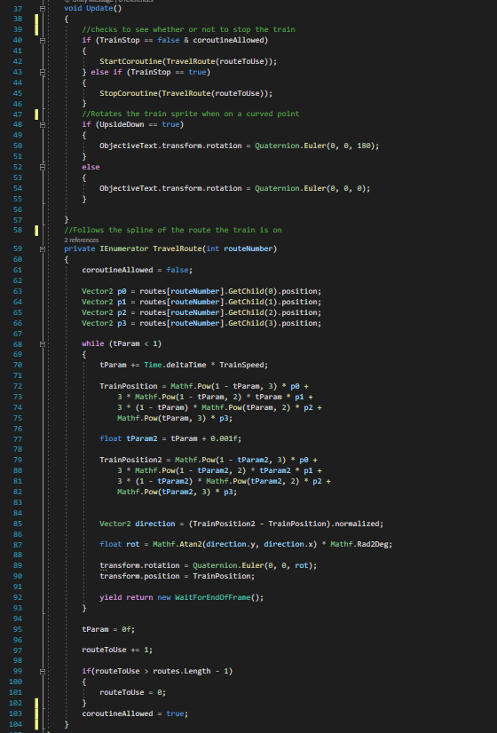
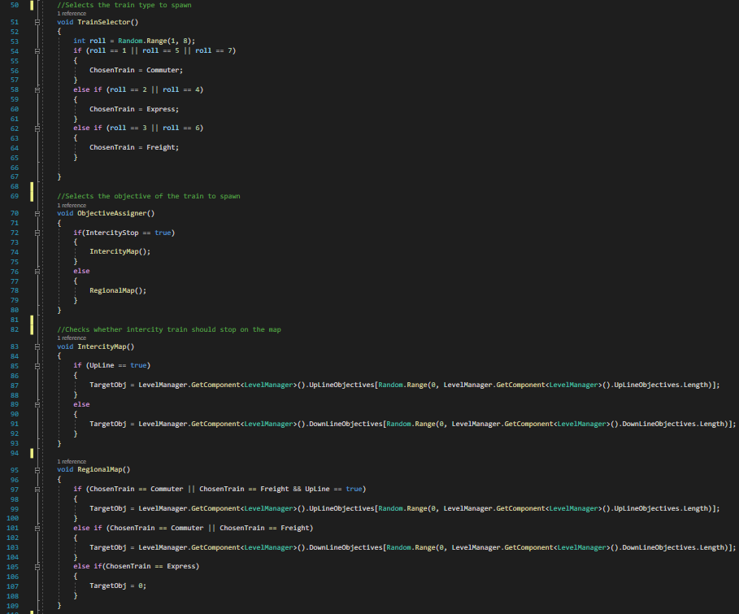
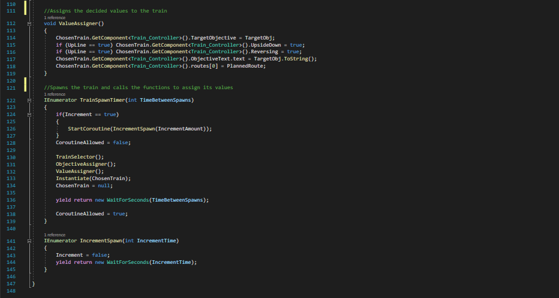
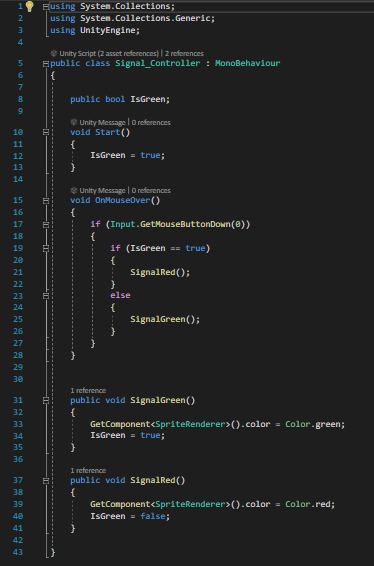

The Signaller
Overview
The signaller is a 2D top-down simulator puzzle game where players must take on the role of a Network Rail signaller.
They need to route trains to their destination by controlling signals and points in a variety of levels based of real stations on the UK rail network.
This is done by clicking on signals and points to stop and start trains as well as change the direction they are heading.


Game Mechanics
Train Controller:
The core of the game is the trains themselves, so I had to devise a system for them to operate. This is where I fell on the decision of spline track segments.
These would be modular and could be easily placed to build levels. I just needed an appropriate script for the train to follow the splines.
Code Snippets

This portion of the script shows an IEnumerator that gets the spline positions and runs an equation to estimate how far along the spline the train should be.
Train Spawner:
The train spawner is another crucial aspect of this project, as it allows the trains to be spawned on a set track segment with however a randomised type and objective, so each time you replay a level it won't be the same trains in the same order.
Code Snippets


This script contains numerous functions to decide the train type and objectives depending on the map attributes. Then calls all these functions and instansiates a train with all the decided values.
Signal:
The signal is a fairly simple but important game mechanic as it tells the trains to stop or go depending on what the player has set.
Code Snippets

The signal works when the player clicks on it. This changes a boolean value. When a train collides with the box next to the signal, it will check this value and stop accordingly.